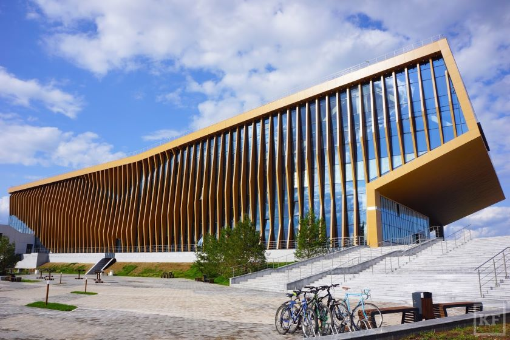

Все программы требуют сдачи двух основных экзаменов: Русского языка и Математики, а также большинство из них требуют сдачи Физики, но некоторые допускают сдачи вместо неё Информатики и ИКТ. Некоторые вузы не требуют сдачи ЕГЭ по физике, но смотрят на Информатику и ИКТ и делают большой упор на них. Всё зависит от выбранной вами специальности. С полным их списком вы можете ознакомиться на этом сайте: https://postupi.online/professiya/robototehnik-robotehnik/programmi/
